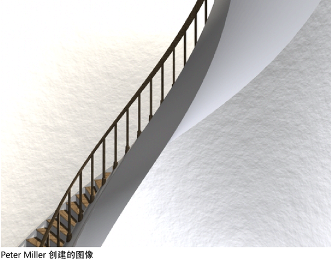

创建扭曲变形器时，用户可以先设定创建选项，然后再创建变形器，也可以使用当前创建选项立即创建变形器。如果不确定当前的创建选项是什么，则在创建变形器前检查这些选项将可节省以后用于调整变形器属性的时间。
注意： 在创建变形器后，应避免更改可变形对象的点（例如，CV、顶点或晶格点）的数量。更改点数可能会导致意外的变形效果。请确保在对可变形对象的拓扑满意后再开始使用变形器。保存对象的副本，以防需要进行进一步的建模。
创建扭曲变形器
- 选择要变形的对象。
- 选择“变形 > (创建)非线性 > 扭曲”(Deform > (Create) Nonlinear > Twist) >
 。
。
此时将显示“扭曲变形器”(Twist deformer)窗口。
- 单击“基本”(Basic)和“高级”(Advanced)选项卡，然后设定创建选项。
- （可选）在设置创建选项时，也可以执行以下操作：
- 选择以保存创建选项而不创建扭曲变形器，并保持选项窗口的打开状态。
- 选择以将选项重置为其默认值，并保持选项窗口的打开状态。
- 执行下列操作之一：
- 单击“创建”(Create)将创建扭曲变形器。选项窗口将关闭。
- 单击“应用”(Apply)将创建扭曲变形器并保持选项窗口的打开状态。
- 单击“关闭”(Close)将关闭窗口。
示例：扭曲变形：建立螺旋梯模型。

楼梯模型的基板、扶手和装饰板条是使用扭曲变形器形成的。